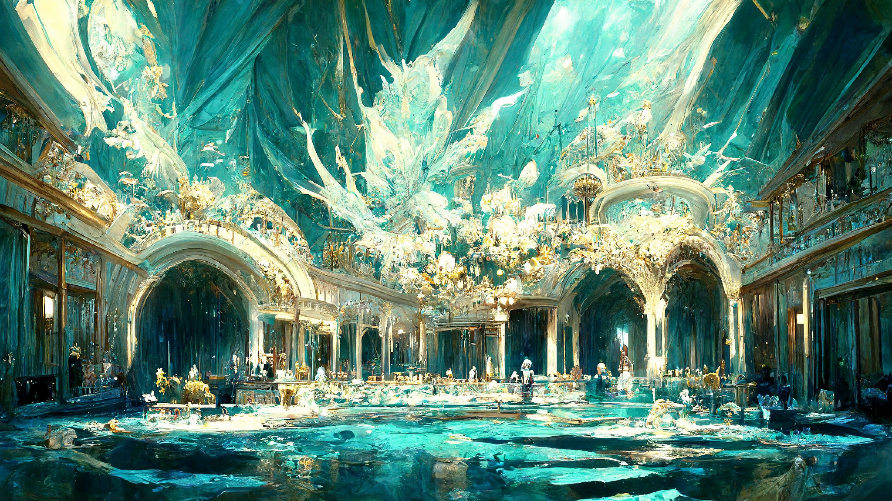

Существующие нейросети:
Midjourney
— это независимая исследовательская лаборатория, которая создаёт программу искусственного интеллекта, которая создает изображения из текстовых описаний, аналогично DALL-E и Stable Diffusion с открытым исходным кодом.
Программа в настоящее время находится в стадии открытого бета-тестирования, которое началось 12 июля 2022 года.
Кстати, на фоне изображение, созданное Midjourney.

DALL-E
— это нейронная сеть OpenAI, созданная при финансовой поддержке Microsoft, способная генерировать высококачественные изображения, исходя из текстовых описаний на английском языке. По заявлениям ряда СМИ и экспертов в области анализа данных, данная нейронная сеть совершила значимый прорыв в области нейронных сетей.

DiscoDiffusion
— это Блокнот Google Colab, в котором используется технология создания изображений искусственным интеллектом, называемая CLIP-Guided Diffusion, которая позволяет создавать привлекательные и красивые фотокарточки только из текстового ввода.